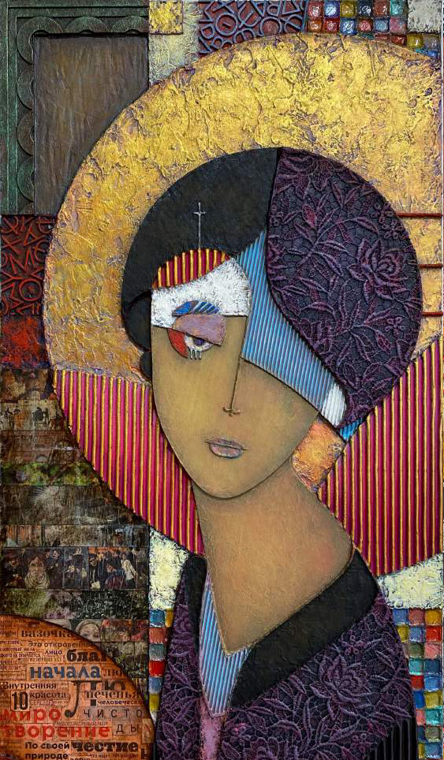

Произведение в разделе «Живопись и графика»
ПРАСКОВЬЯ. СЕРИЯ РУССКАЯ. Женские архетипы русской культуры.
ТЕХНИКА: мдф, живопись, смешанная техника - контуры, акрил, мастики, кружева, ткань, аппликация, картон, металлические пудры, воск, стекло, патина.
ГОД: 2023.
РАЗМЕР: 70х40 см.
Прасковья проста в восприятии и сложна в… «ответном взгляде». Она воплощение не-телесной чувственности и «холодной» доброты. Обе эти категории вообще не очень понятны нам, современным людям, привыкшим к жалости вместо доброты, к откупу вместо милосердия, и к обладанию вместо любви. Впрочем, подмена понятий хоть и влияет на общественную реальность, но сама по себе логику души не отменяет. Тем более, что в русской культуре эти начала сильны до сих пор, даже если иногда кажется, что это не так… Сильны, несмотря на то, что обнаружение таких качеств в себе не сулит ни выгод, ни успеха. Казалось бы…
РУССКАЯ ДУША | ЖЕНСКИЕ АРХЕТИПЫ РУССКОЙ КУЛЬТУРЫ.
Каждая большая культура порождает определенное количество устойчивых образов, которые становятся характерным элементом визуальной среды (в историческом, художественном или социальном плане). Но самое интересное, что помимо этого, в общем-то вполне очевидного и объяснимого следствия, происходит ещё одна занятная штука - это концентрация вокруг образа психической энергии, энергии, с ярко выраженным смысловым окрасом.
Носители культуры - люди, и вполне естественно, что существенная часть этого феномена проявляется в человеческих образах (мужских и женских).
То есть, можно предположить, что важные для конкретной культуры аспекты реальности (физической, исторической, социальной и сакральной) закрепляются в общественном бессознательном в виде ключевых архетипов-образов. Которые как своеобразные «точки сборки» соединяют в себе те или иные варианты (способы) проявления национальных культурных кодов. И мало того, конкретные люди (носители культуры) включают в структуру своей психики эти архетипы как элементы самих себя. Через воспитание, образование, произведения искусства, литературы, поэзии, кинематографа и тп.
Мне захотелось поэкспериментировать с этой идеей. Начал с женских образов. Долго думал, собирал, компоновал. В итоге, получилось пять ключевых женских архетипов русской культуры: Прасковья, Маргарита, Василиса, Лада и Анка.
И знаете, удивительное дело… какая-то магия… Глядя на то, как эти образы действуют на женщин, которые с ними сталкиваются в непосредственном взаимодействии (у меня в мастерской, ну или где-то еще) - как-то даже не по себе становится. Все зрительницы без исключения реагируют абсолютно одинаково (процедурно). Каждая женщина сразу же находит свой основной образ, в упор не видя (и даже не запоминая!) остальные. А через какое-то время начинает обращать внимание на второй образ, который сперва не бросился в глаза, как бы был в тени. В результате выбирается пара образов, один из которых явный, а второй - теневой.
Собственно, сам собой, получился какой-то художественно-психологический тест. И, чем черт не шутит, может быть, для девочек, это способ общения с собственным бессознательным, возможность что-то понять в себе, разобраться в сложных хитросплетениях своей женской души.
Впрочем, вы можете попробовать сами. Хотя, конечно, через экран это совсем не то, нет той силы непосредственного контакта… но всё же.